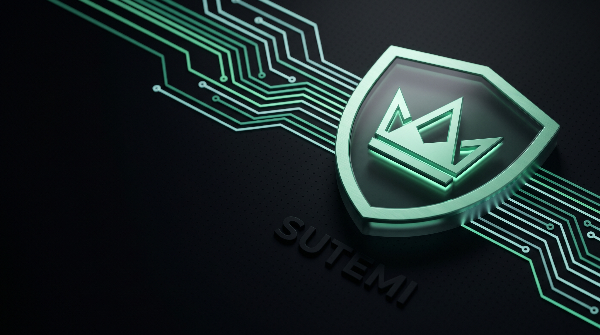

Smart AI-Ready Filter
Automatically cleans massive 10,000+ node subscriptions down to the top 120 TCP-alive EU/US servers, removing dead and geo-blocked regions.

Fast, Lightweight, Liquid Glass UI. Smart AI-ready server filtering, real latency scan and one-click protection.
Sutemi pairs a modern headless Xray/sing-box core with a responsive Liquid Glass interface designed to cut out dead nodes before you even connect.
Automatically cleans massive 10,000+ node subscriptions down to the top 120 TCP-alive EU/US servers, removing dead and geo-blocked regions.
Verifies your real exit IP, country, download Mbps, and live reachability for Gemini, Google AI Studio, ChatGPT, and Claude through the tunnel.
Switch between System Proxy (works instantly with zero admin rights) and full-PC TUN Mode to route games, apps, and terminals.
Backs up your Windows Internet Settings before connecting and restores them cleanly on disconnect, exit, or unexpected shutdown.
Load curated open-source anti-DPI collections in one click or paste your own subscription URL, base64 list, or individual share links.
Priority batch HTTPS latency scan, automatic GeoIP country badges, bulk selection with Shift+Click, and one-click dead/slow cleanup.
No account, no registration, and no manual config editing required.
Download and launch the Windows setup file. If SmartScreen appears, click "More info" → "Run anyway".
Click the server card, paste your own link / subscription, or open "Built-in Free Servers" to load a list.
Press "Ping all" or "Auto AI Fastest" to automatically verify and connect to a fast EU/US server.
Hit "Check AI & Speed" on the main screen to confirm your exit IP, Mbps speed, and AI service access.
Standalone offline installer with the local headless engine bundled inside.
Includes the Liquid Glass Electron UI, bundled Throne/sing-box engine, System Proxy manager, and TUN driver support. Works out of the box.
Common setup questions and quick troubleshooting tips.
Windows shows SmartScreen on any new unsigned executable that hasn't paid for a commercial EV certificate. Click "More info" and then "Run anyway" to install Sutemi normally.
System Proxy routes browsers and proxy-aware apps without requiring Administrator privileges. TUN Mode creates a virtual network adapter and routes all traffic on your entire PC (games, launchers, CLI tools), requiring Sutemi to be launched as Administrator.
It prioritizes low-latency VLESS Reality / Hysteria2 / EU & US nodes, connects, and performs a live check against Cloudflare Trace and Google Gemini endpoints before activating your tunnel—skipping geo-blocked or broken servers automatically.
Proxy cores and TUN drivers are occasionally false-flagged by heuristic antivirus engines. If you see "Throne.exe not found", add Sutemi's installation folder to your antivirus exclusions and reinstall.